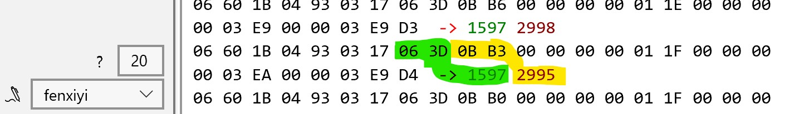
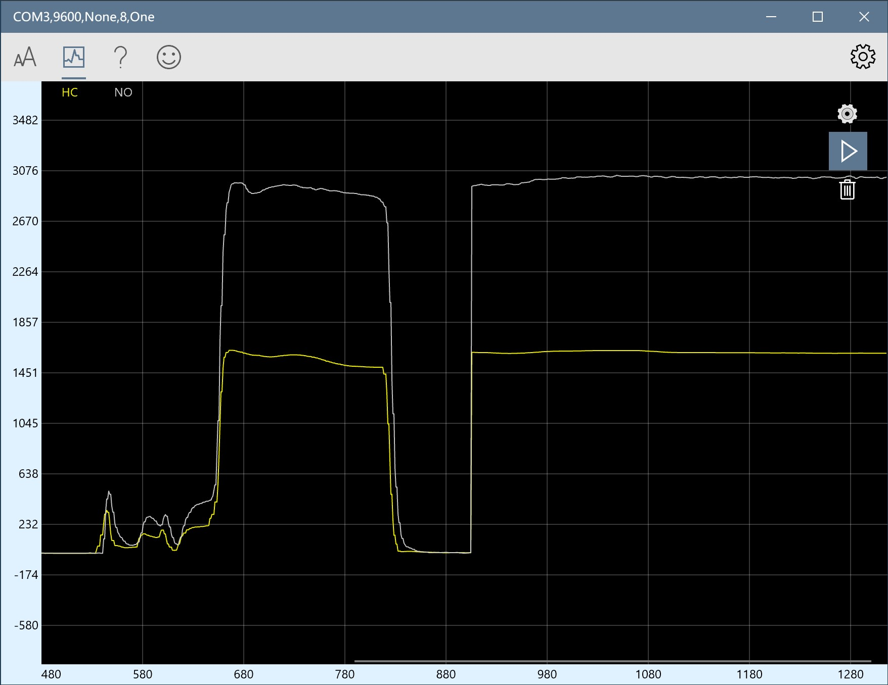

Debuging UART Tool
Introduction
- Receive and display serial port data.High-speed reception is stable, smooth, no freezes, no data loss.
- The data can be sent or displayed as "character string" or "HEX". You can use JavaScript scripts to process the data.
- Automatic frame break function, Automatically insert a line break between two data packets, the data received multiple times will no longer be crowded together, it is easier to distinguish the data each time. Make the inspection and analysis of the data clearer and more intuitive.
- Waveform display function. The data sent according to the protocol can be displayed as a waveform. Supports simultaneous drawing of multiple waveforms. The ordinate is automatically adjusted to facilitate observation. And support the waveform review function and screenshot function.
- Support multiple character encoding "ASCII","GB2312","UNICODE","UTF-8","BIG5","shift_jis"
- The serial port baud rate can be selected as 300bps-1500000bps. (Hardware support is required when the baud rate>115200). Support custom serial port baud rate at the same time.
- Support extended commands, up to 600 groups of custom commands. Convenient for debugging equipment.
- Custom command list, Combine multiple extended commands into a list. Just click once to send, automatically execute each command in the list.
- Perfectly adapted to high score screens. There is no blurring problem for most software in high score screens.
Get a lot of users alike
- This application is well suited for serial monitoring, full of nice features such as the
capability to dislay and
send
HEX, etc...
- The best terminal app for serial debug!
- It helped me with my Embedded Systems SERCOMM debugging for ADA language. I sometimes also
use
it as alternative to
arduino IDE Serial monitor.
- Everything worked just like it should. One of the best serial port programs I have ever
used. If
it could open
multiple
ports in the same main window, it would be the best.
- Good use Work has been in use for a year
- Excellent app, does what I need for my arduino
- Works great. Love it. It took me a while to figure out some of the UI but eventually I have
discovered everything I
need. One suggestion... adding support for color escape codes would be awesome. I would be
glad
to pay for it as an
add
on.

Use scripts to aid in analyzing data
Use the js script to analyze UART receive data and draw graphics
 js script
(
function main() {
var str = receive.get(); //Read the Received string
receive.write(str); //Prints the received characters
receive.write(" -> ", "red"); //Print the arrow
var buf = StrToBytes(str); //Turn the received hex string into an array.
var val = BufToValue(buf, 7, 2); // CO Turn the array into integers by index and length
var val2 = BufToValue(buf, 9, 2); // HC
receive.write(val + " ", "Green");//Print the converted integer
receive.write(val2, "DarkRed");
chart.write("HC=" + val + "\n"); //Draw to waveform interface. The name is HC
chart.write("NO=" + val2 + "\n"); //Draw to waveform interface. The name is NO
receive.write("\r\n"); //Print line breaks for easy observation.
return;
}
)()
// Turn the data in buf into an integer.
// buf array
// index : The starting position in Bytes
// len : Contains the number of bytes
function BytesToValue(buf, index, len) {
var val = 0;
for (var i = 0; i < len; i++) {
val = val << 8;
val = val + buf[i + index];
}
return val;
}
//Turn the received hex string into an int array.
function StrToBytes(str) {
var index = 0;
var buf = new Array;
for (var i = 0; i < str.length; i++) {
while (str[i] == "«" || str[i] == " ") { //Remove useless characters
if (i < str.length)
i++;
}
buf[index] = parseInt("0x" + str[i] + str[i + 1]);// Turn the string into a number.
index++;
i += 2;
}
return buf;
}
Download Serial Debug
Assistant
analyse.js
Serial Debug waveform description